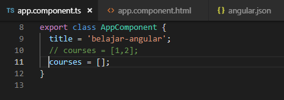
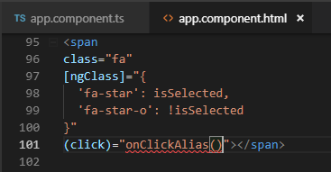

TUGAS PERORANGAN/INDIVIDU
LAPORAN BAB 5
Displaying Data And Handling Events
Disusun Sebagai:
MATA KULIAH: PEMROGRAMAN WEB LANJUT
Oleh:
Moh. Khoirul Arifin/1741720051
TI-2B

PROGRAM STUDI D-IV TEKNIK INFORMATIKA
JURUSAN TEKNOLOGI INFORMASI
POLITEKNIK NEGERI MALANG
2019
Bab 5 Directive
Directive adalah sebuah attribute yang biasanya berawalan dengan prefix ng- dan berfungsi sebagai marker layaknya class dan id ataupun sebagai event driven. Bisa dikatakan juga bahwa directive adalah tag-khususnya si Angular. Directive digunakan untuk modifikasi DOM, ada 2 cara untuk memodifikasi directive yaitu directive structural dan directive attribute. Jika menggunakan directive structural maka yang dimodifikasi adalah struktur DOM sedangkan jika directive attribute maka yang dimodifikasi adalah attribute DOM. Ada beberapa macam directive yang akan kita gunakan selama pembahasan ini.
ngIf
Directive ngIf digunakan untuk sebuah kondisi percabangan. Ada beberapa contoh penggunaan ngIf. Contoh Pertama
buka file
buka file
jalankan localhost maka hasilnya seperti berikut
Jika array pada app.component.ts (courses=[];) dikosongkan maka hasilnya seperti berikut

contoh kedua menggunakan else:
buka file app.component.html modifikasi kodenya menjadi berikut
jalankan localhost dengan kondisi array pada app.component
dengan array kosong

hasilnya :
dengan array ada isi
Hasilnya
cara ketiga :
buka file app.component.html modifikasi kodenya menjadi berikut
jalankan localhost dengan kondisi array pada app.component
dengan array kosong
hasilnya :
dengan array ada isi
Hasilnya
Hidden Property
Selain menggunakan directive ngIF kita juga dapat menggunakan property Hidden untuk menampilkan salah satu data. Jika menggunakan ngIF element yang bernilai salah atau false akan dihilangkan dari DOM sedangkan jika menggunakan Hidden property jika element tersebut bernilai true maka element tersebut yang akan dihidden. Untuk lebih jelasnya ikuti langkah berikut
buka app.component.html
jalankan localhost maka hasilnya seperti berikut
selain contoh diatas kita juga dapat memberikan property seperti berikut
dengan catatan pada app.component.ts pada courses terdapat array courses dengan nilai 1 dan 2
jalankan localhost (berbeda hasil jika pada array courses tidak terdapat isinya)
Jika kita inspect element maka akan terlihat property hidden tidak terdapat kondisi true ataupun false.
berbeda jika kita menggunakan ngIF terdapat bindings dengan nilai false
ngSwitchCase
Menyediakan ekspresi switch untuk menyamakan dengan ekspresi ngSwitch yang tersedia. Ketika ekspresi sama, maka template NgSwitchCase menampilkan.
Untuk lebih jelasnya ikuti langkah berikut :
buka file app.component.html modifikasi codenya menjadi seperti berikut

Penjelasan Code
line 45 terdapat event binding (click)=”viewMode=’list’”
line 47 pada tag a ditambah class binding [class.active]=”viewMode==’list’”
line 52 pada tag div terdapat property binding [ngSwitch]
line 53, 54, 55 pada tag div ditambah directive ngSwitchCase
buka file app.component.ts tambahkan property viewMode (line 12)
run localhost maka hasilnya seperti berikut saat diklik list view maka akan muncul list view content dan jika kita pilih ListView maka akan tampil tulisan List View Content
ngFor
ngFor adalah sebuah directive pada angular yang berfungsi untuk melakukan looping terhadap beberapa data misal data kita adalah sebuah array, jadi directive ini akan melopping array kita pada bagian template. Untuk lebih jelasnya ikuti langkah-langkah berikut :
buka app.component.ts property CoursesFor yang berisikan array (line 12)
buka file app.component.html tambahkan directive ngFor pada element li
Penjelasan code
line 59 terdapat directive ngFor dengan let item dari property courseFor pada app.component.ts dan dengan index alias i
linr 60 adalah string interpolasi
jika dijalankan maka hasilnya seperti berikut
kita juga dapat memberi tanda tertentu pada index yang bernilai ganjil dengan menggunakan isEven https://angular.io/api/common/NgForOf
ngFor dan change Detection
Dengan memodifikasi directive ngFor kita dapat melakukan penambahan atau pengurangan data. Untuk lebih jelasnya ikuti langkah berikut :
Pada percobaan ini kita akan menambahkan sebuah data array pada coursesFor
tambahkan button pada app.component.html (line 64)
tambahkan method onAdd()
Penjelasan code
line 22-24 adalah sebuah method yang digunakan untuk melakukan push data (id:6, name:’courses6’) ke coursesFor
sehingga hasilnya seperti berikut (jika kita tekan button add maka akan ditambahkan sebuah data courses 6)
setelah kita berhasil menambahkan sebuah data array pada courseFor maka untuk selanjutnya kita akan mencoba untuk melakukan penghapusan data.
Tambahkan sebuah method onRemove pada app.component.ts
Penjelasan code
line 26 sebuah method dengan parameter item. Jika kita console.log (item) maka hasilnya pada saat kita hapus salah satu data maka hasilnya akan seperti berikut
line 27 sebuah variabel baru dengan nama index bertipe data number. Untuk lebih jelasnya kita bisa tambahkan console.log(index) pada method onRemove dan hasilnya pada saat kita hapus salah satu data maka akan seperti berikut
Buka app.component.html dan tambahkan sebuah button untuk menghapus (line69)
penjelasan code :
line 69 adalah sebuah button dimana terdapat event click yang memanggil method onRemove dengan parameter item
hasilnya seperti berikut (pada saat button remove diclick maka salah satu data akan hilang sementara)
selain itu kita juga dapat melakukan perubahan status menggunakan event click
buka file app.component.html tambahkan button (line 70)
penjelasan code :
pada line 70 terdapat sebuah button dan event click dimana event click ini memanggil method onChange dengan parameter item
buka file app.component.ts buatlah sebuah method onChange dengan parameter item dan didalam method tersebut adanya perubahan string menjadi updated

hasilnya
ngFor dan trackby
Pada studi kasus berikut ini kita akan menampilkan isi array saat button diclick. Pemasalahan yang muncul jika button click tersebut diclick berkali-kali, maka secara tidak langsung data akan mereload ulang. Untuk lebih jelasnya ikuti langkah berikut:
- Buka file app.component.ts buatlah sebuah method dengan nama loadCourses (line
38) tapi sebelumnya buat sebuah property dengan nama coursesForOne (line 37)
buka file app.component.html dan tambahkan code seperti pada gambar
hasilnya saat button diclick
sekarang kita lakukan analisa buka inspect element, saat button belum diclick seperti pada gambar berikut
dan saat button diklik maka element ul akan muncul seperti pada gambar berikut
jika kita lakukan klik kembali maka button akan merespon kembali dengan menampilkan data yang sudah ada dalam arti mengunduh ulang yang sudah ada (jika kita lakukan klik kembali maka pada inspect element akan muncul highlight warna ungu dimasing-masing element li)
oleh karena itu kita membutuhkan TrackBy yang nanti digunakan untuk mengecek jika data sudah ada maka button tidak perlu melakukan actionnya kembali
untuk menambahkan TrackBy dengan cara menambahkan pada app.component.html pada directive ngFor
selain itu tambahkan juga sebuah method trackCourse dengan parameter index dan itemone pada app.component.ts
Penjelasan code:
- line 48 sebuah nilai kembalian jika itemone bernilai true maka itemone.id akan ditampilkan dan jika itemone bernilai false maka itemone tidak terdefinisi
- jika berhasil maka pada saat button tampilkan data diklik untuk kedua kalinya pada inspect element tidak ada muncul highlight ungu pada masing-masing element li
6.1 The leading Asterik
leading asterik adalah tanda asterisk yang ada pada directive seperti *ngFor dsb. adapun maksud leading asterisk pada sebuah directive adalah bahwa kita memberi tahu angular untuk menulis ulang markup tertentu, seperti code berikut
pada gambar diatas terdapat sebuah directive *ngIF dimana fungsi dari asterisk pada ngIf adalah memberi tahu angular untuk menulis ulang markup dari div tersebut menggunakan ng template dengan menggunakan property binding seperti pada gambar berikut
6.1 ngClass
jika pada percobaan sebelumnya kita membuat component favorite menggunakan 2 class binding yaitu class binding fa-star dan fa-star-o seperti pada gambar berikut
selain menggunakan class binding seperti diatas kita juga dapat menggunakan attribute directive class seperti berikut

Custom Directive
pada directive kita juga dapat membuat sebuah custom directive, sebagai contoh kita ingin membuat semua inputan pada textbox secara otomatis menjadi lowercase. Untuk lebih jelasnya ikuti langkah-langkah berikut :
pertama kita harus membuat directive dengan nama input-format terlebih dahulu dengan perintah seperti berikut
Penjelasan :
ng g d input-format => ng generate directive nama-directivenya
jika directive berhasil digenerate maka kita pastikan di app.module.ts pada \@NgModule terdapat nama directive yang kita buat tadi
buka input-format.directive.ts dan tambahkan decorator HostListener seperti pada gambar berikut
Penjelasan code :
line 1 kita tambahkan (mengimport) sebuah fungsi decorator HostListener agar dapat menggunakan event DOM yang menyediakan method untuk menangani sebuah event yang sedang berjalan. Untuk lebih jelasnya penggunaan HostListener buatlah 2 buah method dengan nama onfocus dan onblur
line 8 adalah sebuah method onfocus dengan menggunakan function decorator \@HostListener dengan parameter event windows focus (https://developer.mozilla.org/en-US/docs/Web/Events/focus)
line 9 sebuah method onblur dengan menggunakan function decorator \@HostListener dengan parameter event windows blur (https://developer.mozilla.org/en-US/docs/Web/Events/focus)
Buka file app.component.html dan tambahakn code berikut
Penjelasan code
line 89 terdapat appInputFormat adalah selector pada input- format.directive.ts
Kita jalan localhost:4200 setelah itu lakukan percobaan click pada textbox dan click diluar textbox. Amati dengan menggunakan console inspect element. Pada saat kita click pada textbox maka pada console akan muncul onFocus tetapi jika click diluar textbox maka console akan keluat onBlur
Setelah kita memahami fungsi dari decorator \@HostListener maka untuk berikutnya kita akan mencoba membuat logika untuk merubah value dari textbox menjadi lowercase
buka file input-format.directive.ts dan modifikasi codenya menjadi berikut
Penjelasan code
line 8 kita membutuhkan sebuah reference untuk ke host element maka kita tambahkan (inject) pada constructor reference object ElementRef. Dengan kata lain ElementRef digunakan untuk mengakses DOM object
line 11 sebuah property dengan nama value dengan tipe data string yang berisi sebuah property nativeElement pada class ElementRef
line 12 untuk merubah inputan menjadi huruf kecil semua
Jalankan localhost dan berikan masukan dengan huruf besar semua setelah itu tekan tab, jika berhasil maka valuenya akan berubah menjadi huruf kecil semua
atau kita bisa menggunakan cara lain dengan menggunakan property binding
buka file app.component.html dan tambahkan property binding dengan nama format
buka file input-format.directive.ts tambahkan decorator input dan modifikasi codenya seperti pada gambar berikut
Penjelasan code
line 7 adalah sebuah decorator input dengan nama property format
line 14 – 16 adalah sebuah kondisi dimana jika format sama dengan lowercase maka semua inputan akan dibuat menjadi huruf kecil semua sedangkan jika selain lowercase maka akan dibuat huruf besar
cat:format disini adalah kondisi di app.component.html
atau kita juga dapat menggunakan cara lain yaitu menggunakan nama selector sebagai property binding
buka app.component.hml modifikasi codenya menjadi berikut
buka input-format.directive.ts dan tambahkan decorator input dengan parameter appInputFormat
Jika dijalankan sebagai contoh kita memasukkan kalimat dengan huruf kecil dan pada saat kita tab maka akan berubah menjadi huruf besar semua seperti berikut